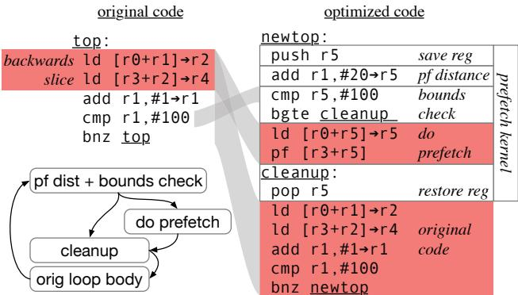
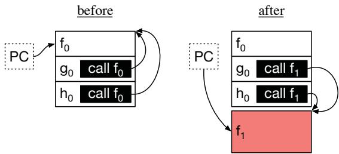
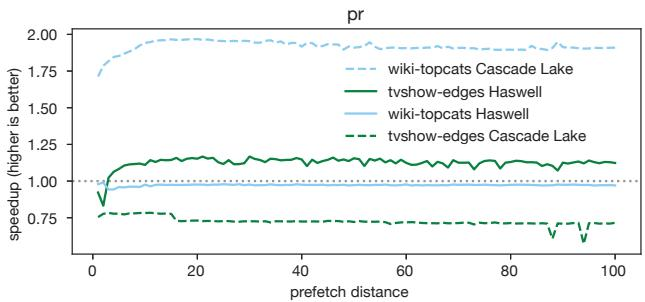
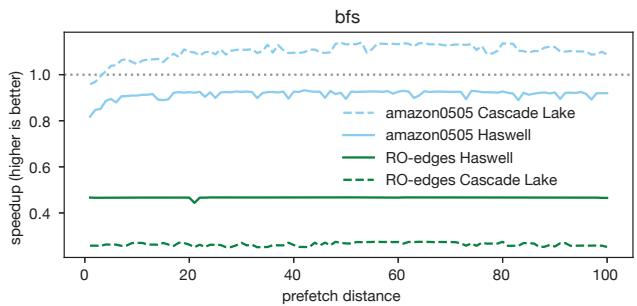

RPG2: Robust Profile-Guided Runtime Prefetch Generation 通俗讲解¶
0. 整体创新点通俗解读¶
痛点直击 (The "Why")
- 传统的软件预取（Software Prefetching）是个“一次性买卖”。编译器或开发者根据特定输入和特定硬件，把预取指令（比如
_builtin_prefetch()）硬编码进程序里。 - 这在现实中非常脆弱。论文通过大量实验（如 Figure 1, 2, 3）证明：最优的预取距离（prefetch distance）对程序输入和处理器微架构极度敏感。
- 同一个程序，换一个数据集，最佳预取距离可能从 1 变成 50。
- 同一个程序和数据集，在 Haswell 和 Cascade Lake 上，预取甚至可能从“神助攻”变成“猪队友”，导致 50-70% 的严重性能下降（Figure 3）。
- 静态方案无法应对这种动态变化。你不可能为每个可能的输入和每种服务器 CPU 都维护一个单独的二进制文件。这就导致开发者对预取敬而远之，因为风险太高。
通俗比方 (The Analogy)
- 想象你在高速公路上开车去一个陌生城市。静态预取就像出发前，你根据地图App（基于某个假设的路况）规划好了一个固定的加油点。
- 但如果路上突然大堵车（输入变了），或者你的车是电车而App按油车规划的（微架构变了），这个固定的加油点就完全失效了，你可能半路抛锚。
- RPG2 的做法完全不同：它给你车上装了一个智能副驾。这个副驾一边开车（程序运行），一边实时观察油表（性能计数器）、路况（内存访问模式），并能动态地、安全地决定：
- 要不要中途加油（插入预取）。
- 在哪里加油最合适（调整预取距离）。
- 如果发现加油反而让车更慢了（比如排队太久），就立刻取消加油计划，让你按原速前进，保证不比原来更差。
关键一招 (The "How")
RPG2 的核心创新在于构建了一个纯软件的、在线的、可回滚的预取优化闭环。它没有发明新的预取算法，而是巧妙地改造了整个优化流程：
- 作者并没有依赖静态编译，而是构建了一个四阶段的运行时系统（Figure 4）：
- Profile（剖析）: 程序跑起来后，用硬件性能计数器（PEBS）实时找出造成 LLC Miss 的热点指令。
- Generate（生成）: 利用 BOLT（一个二进制优化工具）作为后端，在不接触源码的情况下，为目标函数生成一个带预取内核（prefetch kernel）的新版本。这个内核被设计成逻辑上的 NOP，保证语义不变。
- Insert（插入）: 这是最 tricky 的一步。作者没有简单地覆盖原函数，而是将新函数放在新地址，并实现了针对 C/C++ 的 On-Stack Replacement (OSR)。这意味着即使函数正在执行中，也能安全地将执行流切换到带预取的新版本（Figure 6）。
-
Tune & Rollback（调优与回滚）: 系统会在线搜索最优的预取距离。最关键的是，如果发现任何预取距离都无法超越原始性能，它会利用 OSR 无缝切回原始代码，彻底规避了预取带来的性能风险。
-
这套机制的核心保障是 BOLT Address Translation Table (BATT)，它像一张精确的地图，让系统能在新旧两个函数版本的任意指令间进行安全转换，从而实现了“大胆尝试，不行就撤”的鲁棒性。这正是 RPG2 名字中 “Robust” 的真正含义。
1. 基于BOLT的二进制代码分析与生成 (ELI5)¶
痛点直击 (The "Why")
- 传统的 profile-guided prefetching（如 APT-GET）都是在编译期静态完成的。这意味着你必须为每个程序、每种输入、甚至每种 CPU 微架构，都预先跑一遍 profiling，然后生成一个专用的二进制文件。
- 这在现实中几乎不可行：程序输入千变万化（比如图算法跑不同规模的社交网络），CPU 型号也各不相同（Haswell vs. Cascade Lake）。一个在 A 输入上最优的预取距离，在 B 输入上可能直接导致 50% 的性能下降（见 Figure 3）。
- 更麻烦的是，很多程序根本拿不到源码，只有二进制。静态编译器对此束手无策。
通俗比方 (The Analogy)
- 想象你要给一辆正在高速行驶的汽车换轮胎。传统方法是：把车开回车库（停机），拆掉旧轮子，装上新轮子（重新编译），再开出去。但如果路况（输入数据）随时在变，你总不能频繁停车换胎。
- RPG2 的做法更像是“边开边换”：它先观察车子跑得怎么样（Profiling），然后在后备箱里快速造一个新轮胎（BOLT 生成新代码），找个服务区短暂靠边（ptrace 暂停），几秒钟内把新轮胎换上（Runtime Code Insertion），如果发现新轮胎反而更颠簸，还能立刻换回原来的（Rollback）。
- 而 BOLT 就是那个能在后备箱里快速、精准地制造出完美匹配新车轮的“移动修车厂”。
关键一招 (The "How")
- 作者并没有试图去修改或替换整个编译工具链，而是巧妙地将他们的预取逻辑封装成一个 BOLT Pass（具体叫
InjectPrefetchPass），直接作用于程序的 二进制文件。 - 这个 Pass 的核心工作流是：
- 识别热点：通过分析 PEBS 采样到的 LLC Miss 信息，定位到造成最多缓存未命中的那几条 load 指令。
- 模式匹配：对这些 load 指令进行 backward slicing，追溯其地址计算依赖，并将其归类到预定义的三种可预取模式中（见 Table 1）。这一步的关键在于，它能处理复杂的 indirect memory access（如
a[b[i]]），而这正是硬件预取器的软肋。 - 生成内核：一旦模式匹配成功，就在对应的循环头（loop header）处，原地插入一段“预取内核”（prefetch kernel）。这个内核会精确地复制原始 load 的地址计算逻辑，但目标是提前
d步计算出未来要访问的地址，并发出_mm_prefetch指令。 - 保证安全：生成的内核自带 bounds check（边界检查），防止因预取越界而引发段错误。同时，它被设计成一个逻辑上的 NOP，即除了预取行为外，不会改变任何寄存器或内存状态，确保语义正确性。
- 最终，BOLT 输出一个全新的、嵌入了智能预取逻辑的二进制文件，为后续的 在线调优（Phase 4）和 运行时替换（Phase 3）提供了基础。整个过程完全绕过了源代码，实现了对黑盒二进制程序的“外科手术式”优化。

Table 1. Memory access categories that RPG2 supports

Figure 5. Annotated example of RPG2 code transformations.
2. 运行时代码注入与在线栈替换（OSR） (ELI5)¶
痛点直击 (The "Why")
- 传统的 Profile-Guided Optimization (PGO) 或静态编译器（如 APT-GET）在程序运行前就“拍板”了预取策略。这在面对多变的输入数据或不同的 CPU 微架构时非常难受。
- 想象一下，你为一个图算法编译了一个带预取的二进制文件，它在一个社交网络图上跑得飞快，但在另一个网页链接图上却因为预取距离不对，疯狂污染缓存，性能直接崩盘。更糟的是，一旦程序跑起来，你就无法更改这个已经“焊死”在二进制里的预取逻辑。
- 即使你知道预取可能有害，静态方案也无法在运行时“悬崖勒马”，只能眼睁睁看着性能被拖垮。
通俗比方 (The Analogy)
- 这就像给一辆正在高速公路上飞驰的汽车更换引擎。传统做法是：车必须开回车库（停止运行），拆掉旧引擎（原始函数），装上新引擎（带预取的函数），然后再上路。但对于那些99%时间都在一个热循环里跑的程序来说，“回车库”的成本太高，甚至错过了最佳优化时机。
- RPG2的做法更像是空中加油+部件热插拔。它先在旁边准备好一个升级版的引擎模块（通过BOLT生成新函数），然后在不停车的情况下，精准地将正在工作的旧引擎无缝切换到新引擎上，并且保证驾驶员（程序逻辑）完全感觉不到颠簸。如果发现新引擎有问题（比如油耗反而更高），还能立刻切回旧引擎。
关键一招 (The "How")
RPG2解决这个难题的核心，在于它没有试图去“修改”原始函数的内存，而是采用了“影子函数 + 精准重定向”的策略，并巧妙地利用了现有工具链的能力。
- 第一步：制造“影子”。RPG2利用 BOLT 这个二进制优化框架，在离线状态下分析原始程序，生成一个全新的、包含预取内核（prefetch kernel）的函数版本。这个新函数是原始函数的“影子”，拥有相同的语义但更强的性能潜力。
- 第二步：安全注入。通过 LD_PRELOAD 注入一个名为
libpg2的轻量级库到目标进程中。当需要进行优化时，RPG2的主控进程通过 ptrace 暂停目标进程，然后让libpg2在目标进程的地址空间内用mmap分配一块新内存，并将“影子函数”的代码拷贝进去。这样就避免了覆盖原始代码的风险。 - 第三步：实现在线栈替换（OSR）。这是最精妙的一步。问题在于，当目标进程被暂停时，它的调用栈上可能正有多个线程在执行原始函数的不同位置。简单地把未来的函数调用指向“影子函数”是不够的，必须把已经在执行中的函数调用也切换过去。
- RPG2利用了BOLT自带的 BOLT Address Translation Table (BATT)。这个表原本是为了支持对已优化二进制文件的再次优化而设计的，它精确记录了原始函数中每条指令与BOLT优化后函数中对应指令的地址映射关系。
- RPG2通过
ptrace读取所有线程的程序计数器（PC），对于PC指向原始函数的线程，它查询BATT，找到对应的“影子函数”中的新地址，并直接修改该线程的PC。这样，当进程恢复运行时，线程就会从“影子函数”的对应位置继续执行，实现了真正的无缝切换。 - 对于切换过程中可能出现在预取内核里的线程（这部分代码在原始函数里不存在，BATT无映射），RPG2采用保守策略：通过 ptrace单步执行，直到线程执行到BATT中有映射的代码位置，再进行转换。
- 第四步：动态回滚。如果后续的性能监控发现预取有害，RPG2可以利用同样的BATT机制，将所有指向“影子函数”的调用和PC都反向映射回原始函数，完美地“撤销”整个优化操作，将性能恢复到基准线。

Figure 6. The PC register and code memory of the target process before and after, RPG2’s code replacement.
3. 基于性能反馈的动态预取距离调优 (ELI5)¶
痛点直击 - 传统的软件预取，无论是手动还是编译器自动插入，都面临一个致命问题：预取距离（prefetch distance）是“写死”的。这个距离一旦确定，就无法适应程序运行时的真实情况。 - 这个“难受”体现在三个方面： - 输入敏感性：同一个程序，处理不同规模或结构的数据（比如图算法跑在不同的社交网络图上），其内存访问的节奏完全不同。对A数据集最优的距离，在B数据集上可能完全无效甚至有害。

Figure 1. The sssp benchmark from CRONO [2] has very different optimal prefetch distances (shaded regions) with different inputs.
- 硬件敏感性：同样的代码和数据，在Haswell和Cascade Lake这样的不同微架构上，由于缓存大小、内存带宽、乱序执行能力的差异，最优预取距离也会大相径庭。

Figure 2. The pr benchmark from CRONO [2] sees a speedup or a slowdown with prefetching, depending on the microarchitecture.
- 双刃剑效应：预取太近，数据还没到就被用，等于没预取；预取太远，数据早早进了缓存又被挤出去，还白白浪费了宝贵的内存带宽。更糟的是，错误的预取会严重拖慢程序，而静态方法对此束手无策。

Figure 3. The bfs benchmark from CRONO [2] often (but not always) suffers significant performance slowdown with prefetching.
通俗比方 - 想象你在一条传送带上工作，你的任务是从传送带上拿零件组装产品。零件到达你面前需要固定的时间（内存延迟）。 - 静态预取就像是老板根据昨天的经验，给你定下了一个规矩：“你必须在组装当前零件的同时，伸手去拿后面第N个零件”。但如果今天传送带速度变了（微架构不同），或者零件的大小和间距变了（输入数据不同），这个N值很可能就不合适了。拿早了手闲着（浪费精力/带宽），拿晚了就得干等（流水线停顿）。 - RPG2的做法则像是给你配了一个智能助手。他先观察你工作几秒钟（Profiling），然后在你旁边装了一个可以随时调节的机械臂（注入预取代码）。接着，他不断微调机械臂抓取的提前量（动态调优），并通过看你单位时间能组装多少产品（IPC）来判断哪个提前量最好。如果发现怎么调都比你自己干还慢，他就干脆把机械臂收起来，让你恢复原样。
关键一招 - RPG2最核心的创新在于，它没有试图在编译时“猜”出一个完美的预取距离，而是将这个决策推迟到运行时，并建立了一个闭环反馈系统。 - 具体来说，它在原来的“分析-注入”流程后，增加了一个“监控-搜索-决策”的在线调优阶段： - 性能指标选择：它选用IPC（Instructions Per Cycle）作为“健康度”指标。这是一个非常聪明的选择，因为IPC直接反映了处理器流水线的充实程度，综合了缓存命中、带宽竞争等所有因素的最终效果，比单纯看缓存未命中率（MPKI）更能反映真实性能。 - 高效的搜索策略：为了避免在巨大的距离空间（比如1-200）里盲目穷举，它设计了一个三阶段的智能搜索算法： - 梯度探测：从一个随机点出发，小步试探（±5），快速判断性能提升的方向。 - 粗粒度跳跃：沿着有利方向指数级（翻倍）跳跃，快速逼近性能峰值区域。 - 精细二分：在锁定的小范围内进行二分查找，精确定位局部最优解。 - 安全回滚机制：整个调优过程是“无害”的。如果搜索完所有候选距离，发现最好的那个也比原始代码的IPC低，RPG2会果断地将执行流切换回未经修改的原始函数，确保性能不会因预取而受损。这个能力是任何静态方法都无法企及的。

Figure 10. RPG2’s impact on IPC over time.
4. 安全回滚机制 (ELI5)¶
痛点直击 (The "Why")
- 传统的 profile-guided prefetching（如 APT-GET）是“一锤子买卖”：编译时根据某个输入或硬件环境，把预取指令和距离硬编码进二进制文件。
- 这在现实中非常“难受”，因为：
- 同一个程序，换一个输入数据（比如图的稀疏度不同），最优的预取距离可能天差地别（见 Figure 1）。
- 同一个程序+输入，在不同的微架构（如 Haswell vs. Cascade Lake）上，预取甚至可能从“神助攻”变成“猪队友”（见 Figure 2 和 Figure 3）。
- 最致命的是，一旦预取配置不当，它会主动作恶：不仅浪费内存带宽，还会把有用的缓存行给挤出去，导致性能雪崩式下降。而静态方案对此毫无办法，只能眼睁睁看着。
通俗比方 (The Analogy)
- 想象你在开车，RPG2 就像一个极其谨慎的自动驾驶副驾。
- 它看到前方路况复杂（程序热点），决定尝试一套新的驾驶策略（插入预取）。
- 但它不会直接猛打方向盘。它会先小幅度调整（尝试一个预取距离），然后紧盯仪表盘（监控 IPC）。
- 如果发现车速（性能）变快了，就继续微调；但如果发现车速反而慢了，或者车身不稳（性能下降），它会立刻、果断地松开方向盘，让你的手（原始代码）重新掌控车辆，确保你至少能维持原来的驾驶体验。
- 这个“松开方向盘”的动作，就是安全回滚机制。它不是简单的“关掉预取”，而是把整个执行状态无缝切回到从未被修改过的原始代码路径上。
关键一招 (The "How")
- 作者并没有在原地修改代码，而是巧妙地采用了“影子函数”的设计。
- 原始函数
F0被完整保留，纹丝不动。 - 优化后的新函数
F1（带预取内核）被生成并加载到新的内存地址。 - 当需要回滚时，最关键的一步是处理那些“正在
F0里执行”的线程（即 On-Stack Replacement, OSR 问题）。 - RPG2 利用了 BOLT 生成的 BATT (BOLT Address Translation Table)。这个表就像一本精确的“新旧地图坐标对照手册”，能将
F1中任意指令的地址映射回F0中对应的原始地址。 - 对于已经进入
F1预取内核的线程（这部分在F0里没有对应物），RPG2 采用了一种“笨但可靠”的方法：通过 ptrace 单步执行，直到线程执行流回到F1的主体部分（这部分在 BATT 中有记录），然后再利用 BATT 完成地址翻译和跳转。 - 最终，通过修改所有相关线程的 PC (Program Counter) 和调用点，将整个程序的执行流干净利落地切换回
F0，从而实现了零风险的性能兜底。
Figure 6. The PC register and code memory of the target process before and after, RPG2’s code replacement.
这个机制的核心价值在于，它将预取从一个“高风险、高回报”的赌博，变成了一个“有止损线的投资”。无论在线调优的结果如何，程序的性能下限都被牢牢锁定在原始基线水平，这极大地提升了预取技术在真实、多变环境中的鲁棒性 (Robustness) 和实用性。